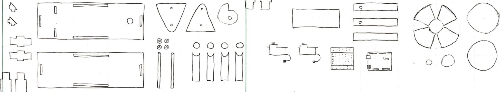
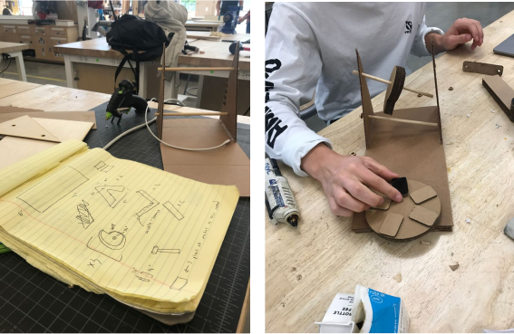
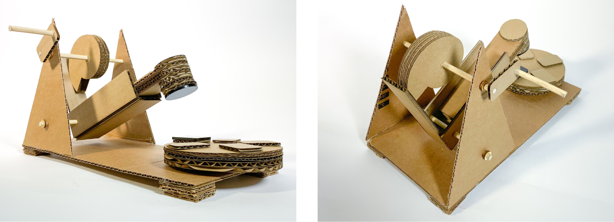
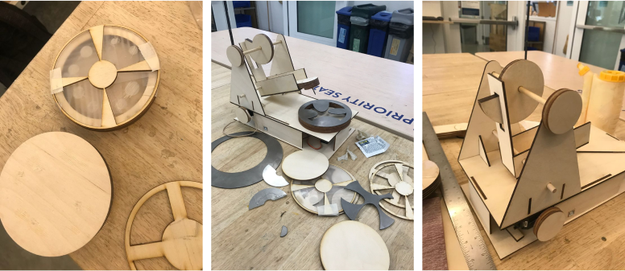
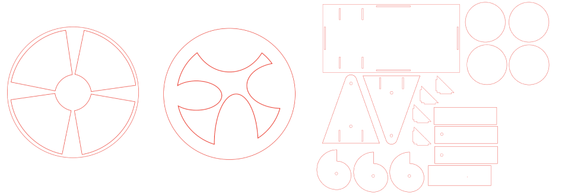
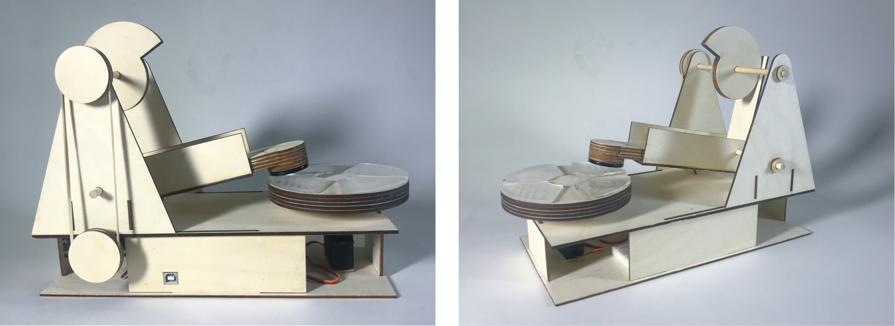
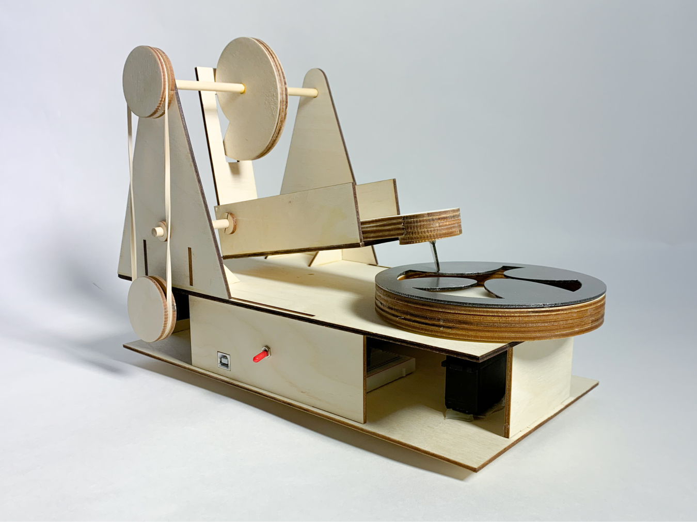
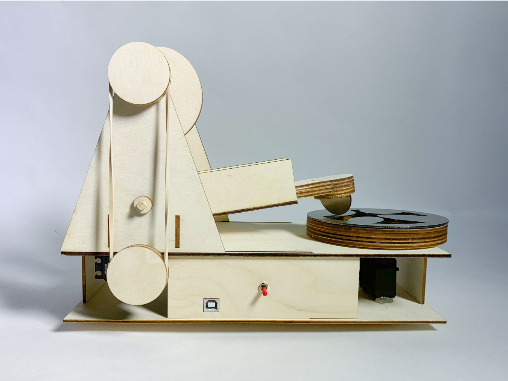

context
For our midterm project for DES INV 22, Prototyping and Fabrication, we were tasked to design a mechanism that created sound through physical means.
We were given three weeks for the project, iterating through low, medium, and high fidelity. The only requirement was to create a motorized device that could produce a discernible, repeatable sound.
ideation
My partner and I decided to focus on creating a device with modular and scalable functionality. After bouncing ideas, we settled on a Davinci power hammer striking a rotating wheel of different metals. The motive mechanism was quite simple – thus, easily reproducible and scalable – and the wheel of materials allowed for customization of the sequence, timing, and pitch of tones.
low fidelity
We spent the first week of the project sketching our design and creating a low-fidelity prototype built of laser-cut cardboard. To prototype the ultimately motorized movement, we added a handle to allow the machine to be physically operated. As a final touch, we cut pieces of acrylic to stick on the hammer and sound wheel to create an unpleasant thudding sound. This allowed us to see how well the sound mechanism worked, while also prototyping the use of acrylic.
Initial sketches of each piece
Sketching and constructing
Final low-fidelity prototype
mid fidelity
For the mid-fidelity deliverable, we began by building our entire mechanism out of 1/8" plywood, redesigning parts to increase structural stability, and accounting for motorization. To increase stability, we added gussets that fit snugly into tabs on the vertical supports of the cam and hammer mechanism and identical tabs on the base. To house our Arduino and motors, we designed a lofted open-base. The critical challenge for the mid-fidelity prototype was in motorizing our mechanism – finding a way to connect the continuous servo to the axle rotating the Davinci cam. We initially considered designing a set of gears stacked along the side of the machine but decided to first try a rubber band pulley. Within a few iterations, the pulley setup worked, achieving the perfect tension and friction with a rubber band to consistently and smoothly rotate the Davinci cam.
Sound wheel creation
Illustrator files
Final mid-fidelity prototype
mid fidelity
We knew we wanted to use the FabLight (a metal laser cutter) to cut the sound wheel out of steel ultimately, but before wasting any metal, we tested another handful of potential designs using wood and acrylic. Our final design was a metal ring with uniquely-shaped elliptical "tongues" poking out towards the center, the idea being that each tongue would produce a different pitch when struck.
 